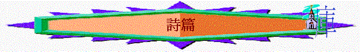

[ Home ] [ 經卷課程 ] [ 查經資料 ] [ 栽培課程 ] [ 事奉培訓 ] [ 聚會資源 ] [ 佈道資源 ] [ 胸懷普世 ] [ 異端異教 ] [ 信息分享 ] [ 專題研究 ] [ 祈禱專題 ] [ 詩歌簡譜 ] [ 動畫之廊 ] [ 輔導關懷 ] [ 站長聯絡 ]
目的:
用主日學直接教授形式, 講解詩篇
內容:
詩篇-律法詩 詩篇-詩中之詩 詩篇-認罪詩 詩篇-預言詩 詩篇-時間/朝昏之詩 詩篇-人生之詩 詩篇-上行之詩 詩篇-安慰之詩 詩篇-信心之詩 詩篇-歷史之詩